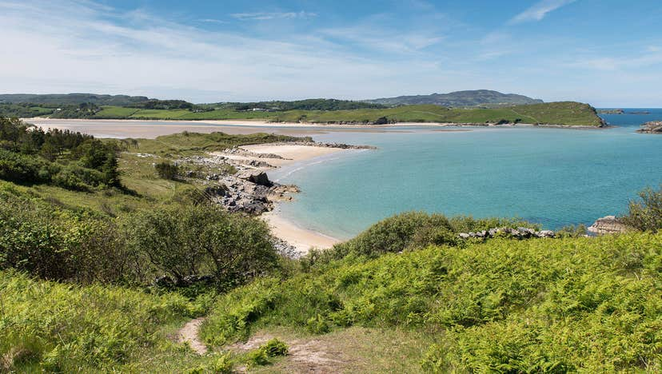
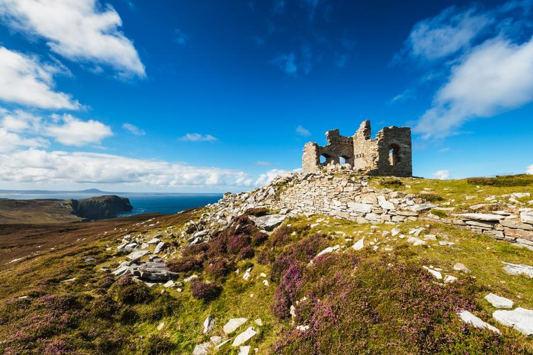
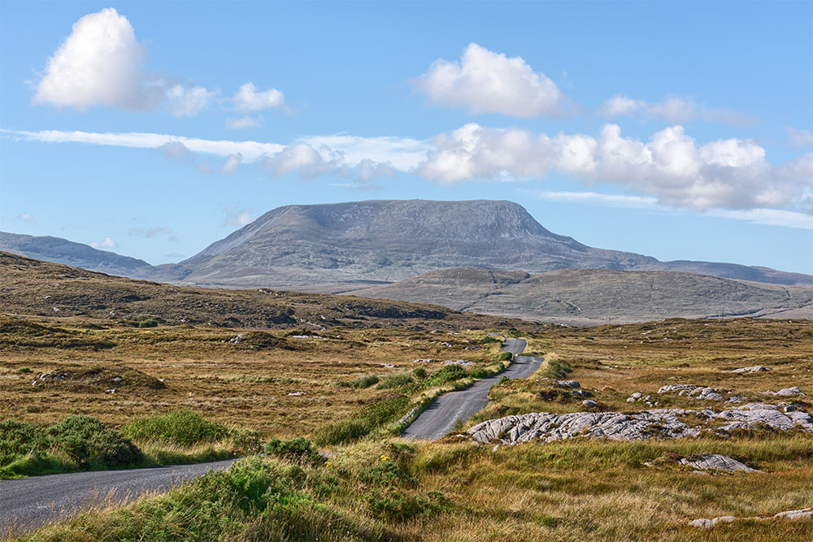
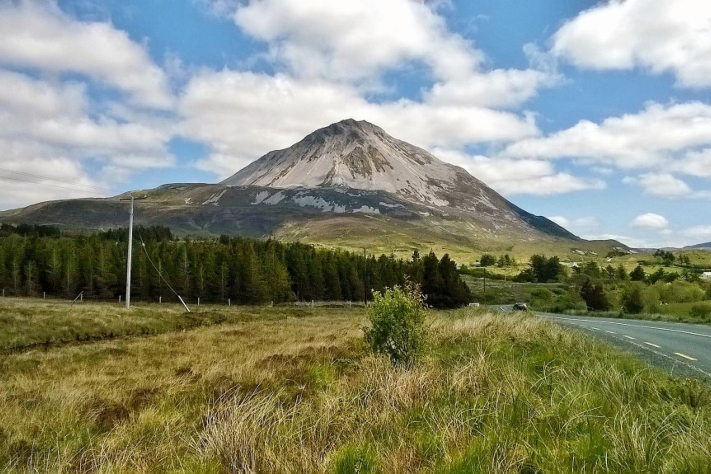
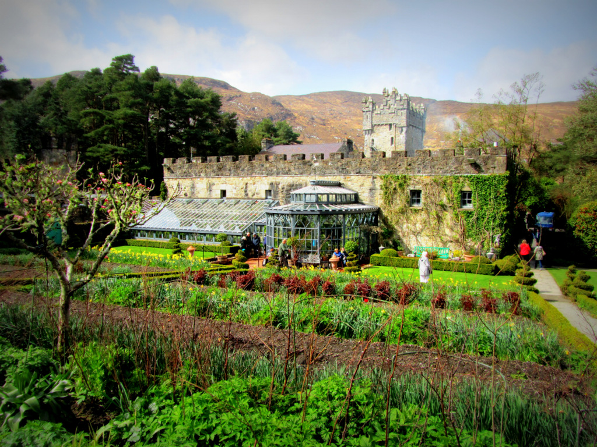

Activities
There are fabulous walks to do nearby along the coast, at Ards Forest Park, Horn Head, Muckish and Errigal mountains and elsewhere along the Wild Atlantic Way.




Less than 20km away is Glenveagh National Park with its magnificent gardens, herd of red deer, castle, and visitor centre.


In addition to the golf course at Dunfanaghy there are two championship courses at Rosapenna which is approx. 30 mins away by car.
Heading in the other direction towards Magheroarty visitors can take a boat trip to the rugged Tory Island : Link to Tory Island or Inishboffin : Link to Inishboffin